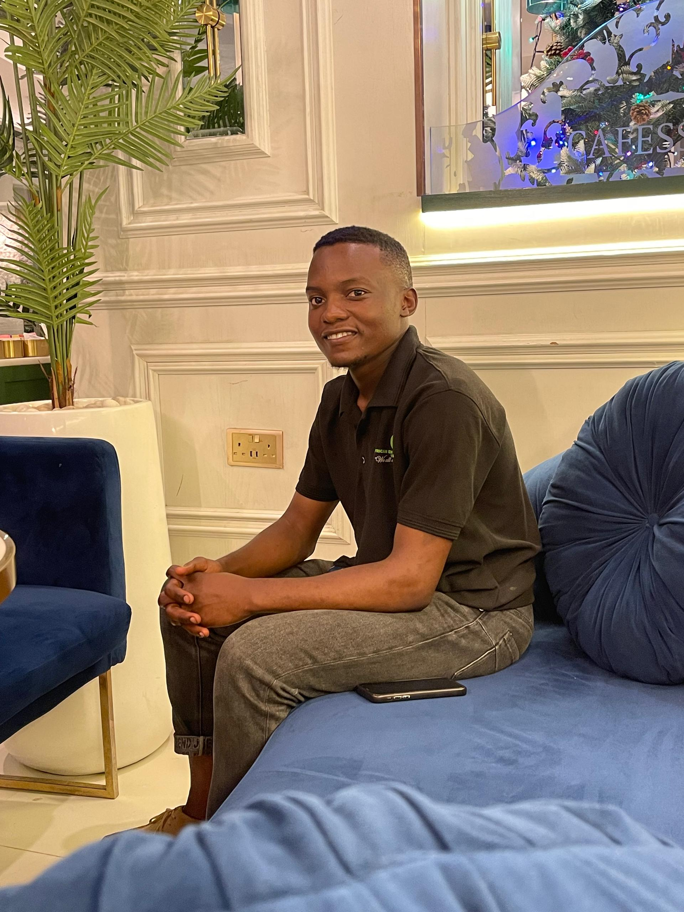

CONTACT INFORMATION
- Full name: SENTONGO PETER TRAVOR
- Address: LUNGUJJA KITUNZI
- Phone number: +256 700511775
- Email: petertravor5@gmail.com
- LinkedIn
+256 700511775
peter_travor
ptravor256
PROFESSION
Dedicated IT student persuing a strong foundation in programming, database management and networking fundamentals.
Currently pursuing
a Bachelor's degree in Information Technology ready to apply skills and knowledge in a dynamic IT sphere.
EDUCATION
- Institute: Uganda Martyrs University
- Location: Lubaga
- Award: Undergraduate
- Course: Bachelor of Science Information Technology
- Expected year of graduation: 2027
- Institute: St. Andrew Kaggwa Gombe High School
- Location: Kampala
- Award: UACE
- Year: 2022-2023
- Institute: St. Andrew Kaggwa Gombe High School
- Location: Kampala
- Award: UCE
- Year: 2017-2020
WORK EXPERIENCE
- Customer Service Representative, Sunda International
2nd Feb upto date (Part-Time,14hrs a week)
- Administrative Assistant, African Empowerment Hub Uganda
- Sales man, Nexus computers and Next Gen game store
- Decorator, Paradise Art Events
Key skills developed
- Good communication and interpersonal skills
- Excellent report writing and documentation skills
- Good team work and peoples handling skills
- Highly organized and attentive to details
- Possession of good computer skills; word, excel, internet and power point presentation
- Results oriented
- Communication.
REFERENCE
- Name:Sandra Senfuma Nabuule
C.E.O, African Empoerment Hub Uganda
Phone:+256 704172007
Email:nabuulesandrahsenfuma@gmail.com
- Name:Ssenyondo Micheal Jordan
Software Engineer, U.C.U
Uganda Christian University
Phone:+256 703553587
Email: jsenyondo96@gmail.com